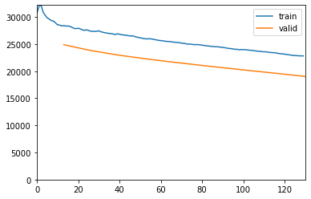
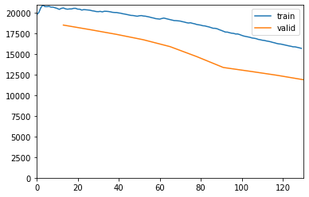
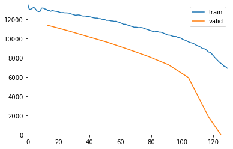
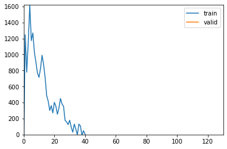
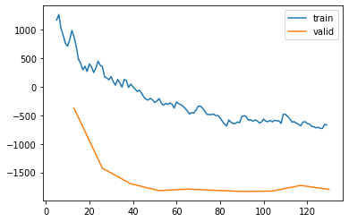

%load_ext autoreload
%autoreload 2from meteo_imp.kalman.fastai import *
from meteo_imp.kalman.filter import *
from meteo_imp.utils import *
from meteo_imp.data import *
from fastai.tabular.learner import *
from fastai.learner import *
from fastai.callback.all import *
from meteo_imp.kalman.fastai import show_results
import pandas as pd
import numpy as np
import torchFilter loss - (float32)
@cache_disk(cache_dir / "full_hai")
def load_data(dtype=np.float32):
return read_fluxnet_csv(hai_path, None, num_dtype=dtype)
hai = load_data()model = KalmanFilter.init_random(n_dim_state = hai.shape[1], n_dim_obs=hai.shape[1]).cuda()model.use_smooth = Falsedls = make_dataloader(hai[:5*20_000], block_len=200, gap_len=1, bs=30) # about 5 year of data dls.one_batch()[0][0].dtype, dls.one_batch()[0][0].device(torch.float32, device(type='cuda', index=0))learn = Learner(dls, model, loss_func=KalmanLoss(only_gap=False, reduction='sum'), cbs=[ShowGraphCallback], metrics=[msk_rmse, msk_r2])learn.fit(10, 3e-3)| epoch | train_loss | valid_loss | rmse | r2 | time |
|---|---|---|---|---|---|
| 0 | 28334.117188 | 24884.890625 | 1.044047 | -0.270700 | 00:10 |
| 1 | 27505.285156 | 23820.916016 | 0.936844 | -0.022787 | 00:09 |
| 2 | 26766.705078 | 22994.548828 | 0.868220 | 0.122282 | 00:09 |
| 3 | 26070.080078 | 22316.949219 | 0.818773 | 0.219742 | 00:09 |
| 4 | 25482.609375 | 21709.919922 | 0.778877 | 0.294147 | 00:09 |
| 5 | 24909.001953 | 21147.484375 | 0.743662 | 0.356575 | 00:09 |
| 6 | 24372.490234 | 20604.521484 | 0.716608 | 0.402541 | 00:09 |
| 7 | 23862.095703 | 20079.589844 | 0.694325 | 0.439092 | 00:09 |
| 8 | 23340.068359 | 19563.205078 | 0.676239 | 0.467748 | 00:09 |
| 9 | 22824.031250 | 19030.230469 | 0.661495 | 0.490591 | 00:09 |

learn.fit(10, 3e-3)| epoch | train_loss | valid_loss | rmse | r2 | time |
|---|---|---|---|---|---|
| 0 | 20513.478516 | 18492.871094 | 0.646592 | 0.512978 | 00:09 |
| 1 | 20331.521484 | 17940.644531 | 0.636259 | 0.528079 | 00:09 |
| 2 | 20015.253906 | 17363.677734 | 0.626718 | 0.541712 | 00:09 |
| 3 | 19642.833984 | 16716.089844 | 0.616619 | 0.556175 | 00:10 |
| 4 | 19214.849609 | 15884.863281 | 0.600617 | 0.578533 | 00:09 |
| 5 | 18648.689453 | 14677.888672 | 0.547030 | 0.651080 | 00:10 |
| 6 | 17847.457031 | 13356.031250 | 0.496326 | 0.713167 | 00:09 |
| 7 | 17063.013672 | 12896.752930 | 0.455412 | 0.758161 | 00:09 |
| 8 | 16343.417969 | 12419.463867 | 0.433779 | 0.779173 | 00:10 |
| 9 | 15676.717773 | 11876.413086 | 0.415929 | 0.795271 | 00:13 |

learn.fit(10, 3e-3)| epoch | train_loss | valid_loss | rmse | r2 | time |
|---|---|---|---|---|---|
| 0 | 13020.457031 | 11358.107422 | 0.402912 | 0.806103 | 00:11 |
| 1 | 12650.278320 | 10791.625000 | 0.392657 | 0.815727 | 00:10 |
| 2 | 12294.549805 | 10184.606445 | 0.383261 | 0.823566 | 00:10 |
| 3 | 11870.844727 | 9569.536133 | 0.376152 | 0.828884 | 00:10 |
| 4 | 11425.293945 | 8862.309570 | 0.366659 | 0.839007 | 00:11 |
| 5 | 10938.154297 | 8113.016602 | 0.363477 | 0.842085 | 00:11 |
| 6 | 10377.956055 | 7253.085938 | 0.363612 | 0.841904 | 00:10 |
| 7 | 9712.108398 | 5912.989746 | 0.365726 | 0.841298 | 00:10 |
| 8 | 8721.796875 | 1818.676758 | 0.379970 | 0.830193 | 00:11 |
| 9 | 6890.971191 | -1213.163086 | 0.375065 | 0.835149 | 00:14 |

learn.fit(10, 3e-3)| epoch | train_loss | valid_loss | rmse | r2 | time |
|---|---|---|---|---|---|
| 0 | 991.025146 | -375.008484 | 0.374033 | 0.836182 | 00:10 |
| 1 | 382.140930 | -1426.713867 | 0.376774 | 0.833246 | 00:09 |
| 2 | -10.901829 | -1699.835083 | 0.374207 | 0.835683 | 00:09 |
| 3 | -249.258392 | -1820.056519 | 0.373657 | 0.836395 | 00:09 |
| 4 | -377.162689 | -1793.390137 | 0.375005 | 0.834909 | 00:10 |
| 5 | -475.895691 | -1815.924683 | 0.375007 | 0.834904 | 00:09 |
| 6 | -518.640808 | -1835.481812 | 0.374665 | 0.835544 | 00:09 |
| 7 | -586.902527 | -1827.023193 | 0.374206 | 0.835841 | 00:10 |
| 8 | -655.092407 | -1729.346924 | 0.375481 | 0.834565 | 00:10 |
| 9 | -669.299683 | -1798.226685 | 0.374862 | 0.835274 | 00:09 |

learn.recorder.plot_loss()
display_as_row(learn.model.get_info(var_names=hai.columns))trans_matrix (A)
| latent | z_0 | z_1 | z_2 |
|---|---|---|---|
| z_0 | 0.1146 | 0.5802 | 0.1363 |
| z_1 | 0.1496 | 0.6129 | 0.3537 |
| z_2 | 0.3043 | 0.6128 | 0.0236 |
trans_cov (Q)
| latent | z_0 | z_1 | z_2 |
|---|---|---|---|
| z_0 | 0.7217 | 0.1717 | 0.0886 |
| z_1 | 0.1717 | 0.1250 | -0.0129 |
| z_2 | 0.0886 | -0.0129 | 0.0281 |
trans_off
| latent | offset |
|---|---|
| z_0 | 0.2728 |
| z_1 | -0.0485 |
| z_2 | 0.4645 |
obs_matrix (H)
| variable | z_0 | z_1 | z_2 |
|---|---|---|---|
| TA | 0.4154 | 0.6550 | 0.3770 |
| SW_IN | 0.0119 | 0.5495 | 0.5917 |
| VPD | 0.1603 | 0.6821 | -0.0631 |
obs_cov (R)
| variable | TA | SW_IN | VPD |
|---|---|---|---|
| TA | 0.8515 | 0.1525 | 0.9209 |
| SW_IN | 0.1525 | 0.2047 | 0.2631 |
| VPD | 0.9209 | 0.2631 | 1.8438 |
obs_off
| variable | offset |
|---|---|
| TA | 0.6057 |
| SW_IN | 0.4861 |
| VPD | 0.1418 |
init_state_mean
| latent | mean |
|---|---|
| z_0 | -0.0218 |
| z_1 | 0.3442 |
| z_2 | 0.0868 |
init_state_cov
| latent | z_0 | z_1 | z_2 |
|---|---|---|---|
| z_0 | 1.1216 | 1.0998 | 0.7476 |
| z_1 | 1.0998 | 1.9714 | 0.9649 |
| z_2 | 0.7476 | 0.9649 | 0.6006 |
This is filtering! this is not smoothing
# torch.save(learn.model, "model_trained_30dec.pickle")show_results(learn, bind_interaction=False)learn.model.use_smooth = True
show_results(learn, items=[10, 110, 130])
learn.model.use_smooth = Falseshow_results(learn, items=[10, 110, 130])# learn.fit(10, 1e-2)# learn.recorder.plot_loss()learn.model.use_smooth = Falseshow_results(learn, items=[1,2,3])# torch.save(learn.model, "trained_filter_29_dec_1.pickle")Filter loss - (float64)
@cache_disk(cache_dir / "full_hai")
def load_data(dtype=np.float32):
return read_fluxnet_csv(hai_path, None, num_dtype=dtype)
hai64 = load_data(np.float64)model64 = KalmanFilter.init_random(n_dim_state = hai.shape[1], n_dim_obs=hai.shape[1], dtype=torch.float64).cuda()model64.use_smooth = Falsedls64 = make_dataloader(hai64[:5*20_000], block_len=200, gap_len=1, bs=10) # about 5 year of data dls64.one_batch()[0][0].dtype, dls64.one_batch()[0][0].device(torch.float64, device(type='cuda', index=0))learn64 = Learner(dls, model, loss_func=KalmanLoss(only_gap=False, reduction='sum'), cbs=[ShowGraphCallback, Float16Callback], metrics=[msk_rmse, msk_r2])NameError: name 'Float16Callback' is not definedlearn64.fit(10, 2e-3)learn64.recorder.plot_loss()display_as_row(learn64.model.get_info(var_names=hai64.columns))show_results(learn64, bind_interaction=False)# learn.fit(10, 1e-2)# learn.recorder.plot_loss()learn.model.use_smooth = Falseshow_results(learn, items=[1,2,3])